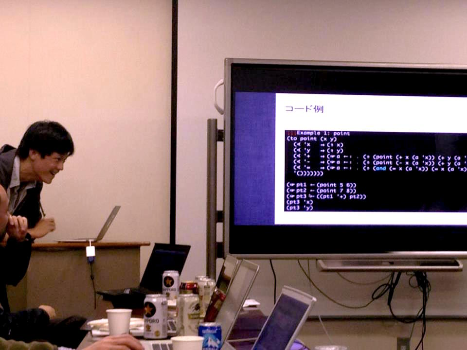

Contacts
Currently
Formerly
Fluent in
- Japanese
- English
- Clojure
- Scheme
- JavaScript
- SML
- Smalltalk
- ... and most other mainstream LLs

Interested in
- Concatenative Languages
- Graphical Languages
- Functional GUI Programming
- Painting
- Radio
- Human Powered Flying Vehicle
- Theoretical Physics
- Roguelike Games
- SyFy

Pet Projects
| Carrot | Purely Functional Poc Lisp (incomplete) |
| LittleSmallscript | Write JavaScript in Smalltalk's Syntax |
| S-exploration | Graphical S-expression Editor |
| Pasta | Client side functional GUI programming |
| Underscore-fix | Underscore.js extensions for serious functional programming |
| JS-CLOS | Multimethod in JavaScript |
| vorpalblade | Roguelike written in Biwascheme (incomplete) |
| coffeehack | Roguelike written in Coffeescript (abandoned) |
Articles
See Also